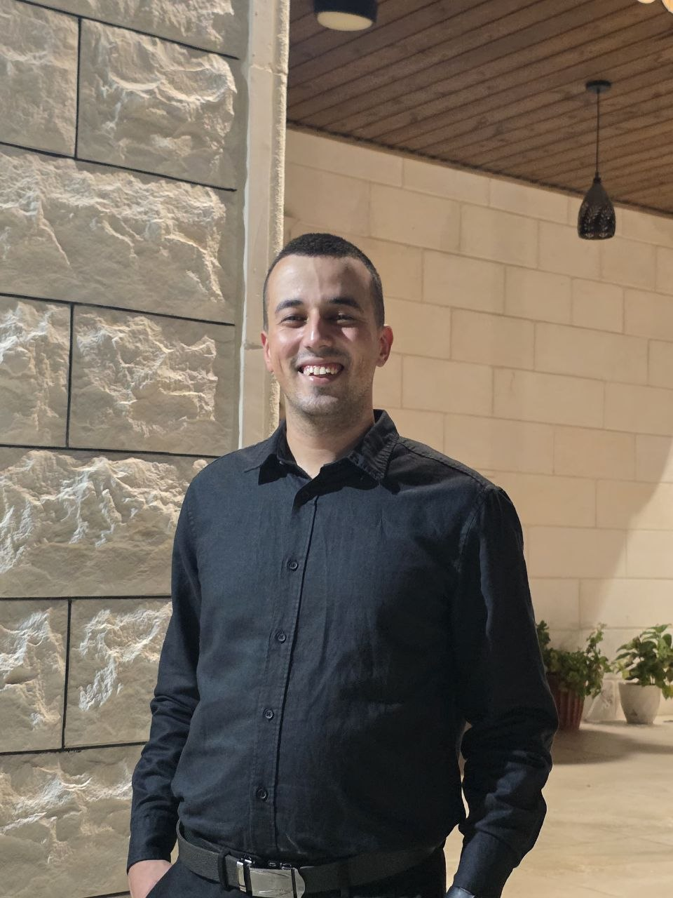
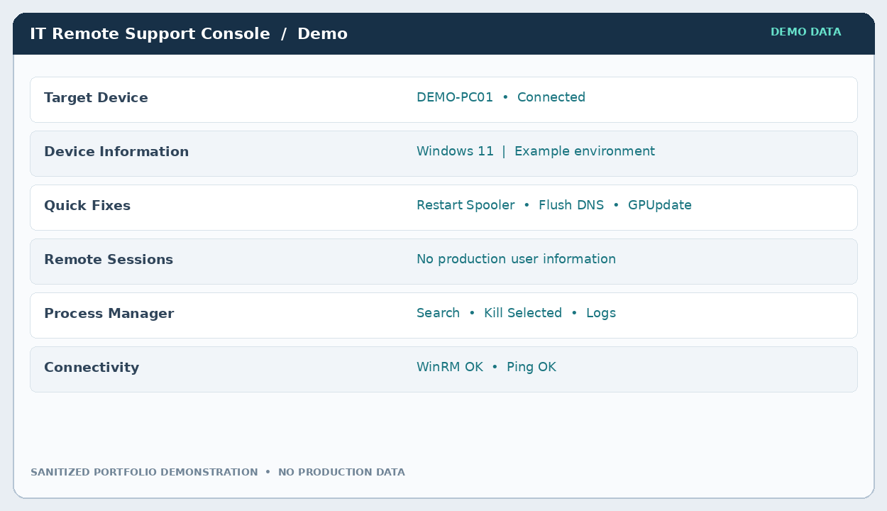
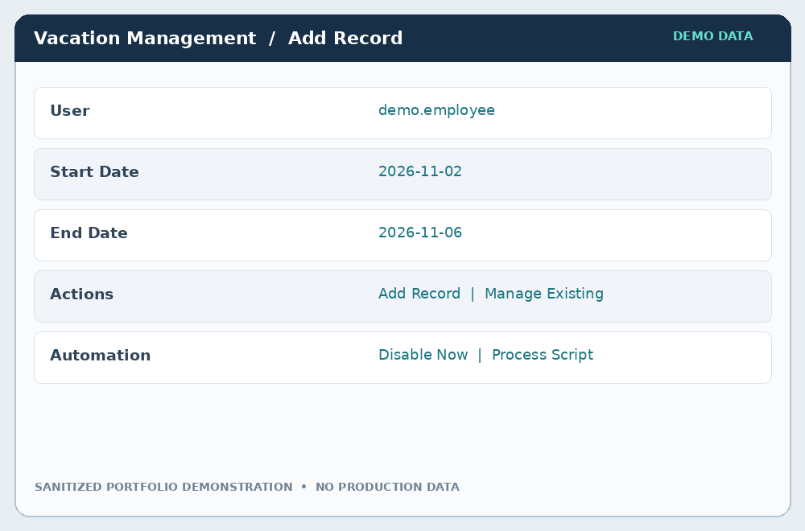

FEB 2026 — PRESENT
Technical Support Specialist
Bank of Jordan
Enterprise desktop, network, software, and user support. Endpoint administration, troubleshooting, and workflow automation.
HELLO, I'M
I solve enterprise IT challenges, streamline endpoint operations, and build practical automation tools with PowerShell and Microsoft technologies.

I'm a technical support specialist with hands-on experience in enterprise endpoint management, identity services, networking, and IT operations. My work spans Bank of Jordan, Jawwal, and infrastructure environments, with a growing focus on system administration and cloud technologies.
Bank of Jordan
Enterprise desktop, network, software, and user support. Endpoint administration, troubleshooting, and workflow automation.
OneTec Solutions
Server installation, deployment, and foundational configuration for datacenter and telecom environments.
Jawwal — Palestine Telecommunications
Hardware, software, network and endpoint support, including exposure to Microsoft Intune, Cisco ISE, and Aruba ClearPass.
Foothill Technology Solutions
Responsive frontend development with HTML, CSS, JavaScript, React, and Git.
Real-world IT automation, presented through privacy-safe demonstrations. The interfaces shown are illustrative recreations—not exact production screenshots—to protect workplace systems and employee information.

PS> Connect-RemoteEndpoint
✓ WinRM session established
PS> Get-UserSessions
✓ Sessions retrieved
PS> Invoke-ITMaintenance_PowerShell-based GUI for remote endpoint operations using WinRM and WMI, reducing repetitive troubleshooting steps without requiring a full RDP session.

PowerShell-driven employee leave workflow for scheduling Active Directory account actions, with validation, audit trails, and operational reporting.
Curious about a certificate? Tap any card to take a closer look and verify it with the issuer.
Pick a certificate, explore the details, and use Verify Credential to check it with the issuing organization.
Open to conversations about IT infrastructure, system administration, cloud technologies, and automation.